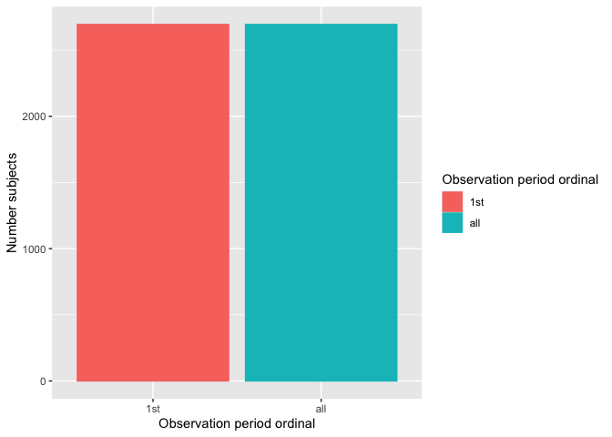

WARNING: this package is under-development
The goal of OmopSketch is to characterise and visualise an OMOP CDM instance to asses if it meets the necessary criteria to answer a specific clinical question and conduct a certain study.
Installation
You can install the development version of OmopSketch from GitHub with:
# install.packages("remotes")
remotes::install_github("oxford-pharmacoepi/OmopSketch")Example
Let’s start by creating a cdm object using the Eunomia mock dataset:
library(duckdb)
#> Warning: package 'duckdb' was built under R version 4.3.3
#> Loading required package: DBI
#> Warning: package 'DBI' was built under R version 4.3.3
library(CDMConnector)
#> Warning: package 'CDMConnector' was built under R version 4.3.3
library(dplyr)
#>
#> Attaching package: 'dplyr'
#> The following objects are masked from 'package:stats':
#>
#> filter, lag
#> The following objects are masked from 'package:base':
#>
#> intersect, setdiff, setequal, union
library(OmopSketch)
con <- dbConnect(duckdb(), eunomia_dir())
cdm <- cdmFromCon(con = con, cdmSchema = "main", writeSchema = "main")
#> Note: method with signature 'DBIConnection#Id' chosen for function 'dbExistsTable',
#> target signature 'duckdb_connection#Id'.
#> "duckdb_connection#ANY" would also be valid
cdm
#>
#> ── # OMOP CDM reference (duckdb) of Synthea synthetic health database ──────────
#> • omop tables: person, observation_period, visit_occurrence, visit_detail,
#> condition_occurrence, drug_exposure, procedure_occurrence, device_exposure,
#> measurement, observation, death, note, note_nlp, specimen, fact_relationship,
#> location, care_site, provider, payer_plan_period, cost, drug_era, dose_era,
#> condition_era, metadata, cdm_source, concept, vocabulary, domain,
#> concept_class, concept_relationship, relationship, concept_synonym,
#> concept_ancestor, source_to_concept_map, drug_strength
#> • cohort tables: -
#> • achilles tables: -
#> • other tables: -Snapshot
We first create a snapshot of our database. This will allow us to track when the analysis has been conducted and capture details about the CDM version or the data release.
summariseOmopSnapshot(cdm)
#> # A tibble: 13 × 13
#> result_id cdm_name group_name group_level strata_name strata_level
#> <int> <chr> <chr> <chr> <chr> <chr>
#> 1 1 Synthea synthetic … overall overall overall overall
#> 2 1 Synthea synthetic … overall overall overall overall
#> 3 1 Synthea synthetic … overall overall overall overall
#> 4 1 Synthea synthetic … overall overall overall overall
#> 5 1 Synthea synthetic … overall overall overall overall
#> 6 1 Synthea synthetic … overall overall overall overall
#> 7 1 Synthea synthetic … overall overall overall overall
#> 8 1 Synthea synthetic … overall overall overall overall
#> 9 1 Synthea synthetic … overall overall overall overall
#> 10 1 Synthea synthetic … overall overall overall overall
#> 11 1 Synthea synthetic … overall overall overall overall
#> 12 1 Synthea synthetic … overall overall overall overall
#> 13 1 Synthea synthetic … overall overall overall overall
#> # ℹ 7 more variables: variable_name <chr>, variable_level <chr>,
#> # estimate_name <chr>, estimate_type <chr>, estimate_value <chr>,
#> # additional_name <chr>, additional_level <chr>
# ADD TABLE OMOP SNAPSHOTCharacterise the clinical tables
Once we have collected the snapshot information, we can start characteristing the clinical tables of the CDM. By using summariseClinicalRecords() and tableClinicalRecords(), we can easily visualise the main characteristics of specific clinical tables.
summariseClinicalRecords(cdm, c("condition_occurrence", "drug_exposure")) |>
tableClinicalRecords()
#> ℹ Summarising table counts
#> ℹ Summarising records per person
#> ℹ Summarising in observation, standard, domain id, and type information
#> ℹ Summarising table counts
#> ℹ Summarising records per person
#> ℹ Summarising in observation, standard, domain id, and type information| Variable | Level | Estimate | cdm_name |
|---|---|---|---|
| Synthea synthetic health database | |||
| condition_occurrence | |||
| Number of subjects | - | N (%) | 2,694 (100.0%) |
| Number of records | - | N | 65,332 |
| Records per person | - | median [IQR] | 23 [19 - 29] |
| mean (sd) | 24.25 (7.41) | ||
| max | 65 | ||
| min | 5 | ||
| In observation | Yes | N (%) | 56,315 (86.2%) |
| No | N (%) | 9,017 (13.8%) | |
| Standard concept | Standard | N (%) | 65,332 (100.0%) |
| Domain | Condition | N (%) | 65,332 (100.0%) |
| Type concept id | EHR encounter diagnosis (32020) | N (%) | 65,332 (100.0%) |
| drug_exposure | |||
| Number of subjects | - | N (%) | 2,694 (100.0%) |
| Number of records | - | N | 67,707 |
| Records per person | - | median [IQR] | 25 [22 - 28] |
| mean (sd) | 25.13 (5.25) | ||
| max | 54 | ||
| min | 7 | ||
| In observation | Yes | N (%) | 67,456 (99.6%) |
| No | N (%) | 251 (0.4%) | |
| Standard concept | Standard | N (%) | 67,707 (100.0%) |
| Domain | Drug | N (%) | 67,707 (100.0%) |
| Type concept id | Prescription written (38000177) | N (%) | 41,997 (62.0%) |
| Dispensed in Outpatient office (581452) | N (%) | 25,710 (38.0%) | |
We can also explore trends in the clinical table records over time.
summariseRecordCount(cdm, c("condition_occurrence", "drug_exposure")) |>
plotRecordCount(facet = "group_level")
#> Warning: The `facets` argument of `facet_grid()` is deprecated as of ggplot2 2.2.0.
#> ℹ Please use the `rows` argument instead.
#> ℹ The deprecated feature was likely used in the OmopSketch package.
#> Please report the issue at
#> <https://github.com/oxford-pharmacoepi/OmopSketch/issues>.
#> This warning is displayed once every 8 hours.
#> Call `lifecycle::last_lifecycle_warnings()` to see where this warning was
#> generated. ### Characterise the observation period After visualising the main characteristics of our clinical tables, we can explore the observation period details. OmopSketch provides several functions to have an overwied of the dataset study period.
### Characterise the observation period After visualising the main characteristics of our clinical tables, we can explore the observation period details. OmopSketch provides several functions to have an overwied of the dataset study period.
Using summariseInObservation() and plotInObservation(), we can gather information on the number of records per year.
summariseInObservation(cdm$observation_period, output = "records") |>
plotInObservation()
#> Warning: ! 1 casted column in omop_table (cohort_set) as do not match expected column
#> type:
#> • `cohort_definition_id` from numeric to integer
#> Warning: ! 1 column in omop_table do not match expected column type:
#> • `cohort_definition_id` is numeric but expected integer
#> Warning: ! 1 column in tmp_001_og_002_1726511481 do not match expected column type:
#> • `cohort_definition_id` is numeric but expected integer You can also visualise and explore the characteristics of the observation period per each individual in the database using
You can also visualise and explore the characteristics of the observation period per each individual in the database using summariseObservationPeriod().
summariseObservationPeriod(cdm$observation_period) |>
tableObservationPeriod()
#> ! Results have not been suppressed.| Variable name | Estimate name | CDM name |
|---|---|---|
| Synthea synthetic health database | ||
| 1st | ||
| Number subjects | N | 5,343 |
| Duration | mean (sd) | 14,402.00 (8,725.34) |
| median [Q25 - Q75] | 13,868 [7,102 - 20,956] | |
| Days to next observation period | mean (sd) | - |
| median [Q25 - Q75] | - | |
| Overall | ||
| Number records | N | 5,343 |
| Number subjects | N | 5,343 |
| Records per person | mean (sd) | 1.00 (0.00) |
| median [Q25 - Q75] | 1 [1 - 1] | |
| Duration | mean (sd) | 14,402.00 (8,725.34) |
| median [Q25 - Q75] | 13,868 [7,102 - 20,956] | |
| Days to next observation period | mean (sd) | - |
| median [Q25 - Q75] | - | |
Or if visualisation is prefered, you can easily build a histogram to explore how many participants have more than one observation period.
summariseObservationPeriod(cdm$observation_period) |>
plotObservationPeriod()
Characterise the concepts
OmopSketch also provides functions to explore some of (or all) the concepts in the dataset.
acetaminophen <- c(1125315, 1127433, 40229134, 40231925, 40162522, 19133768, 1127078)
summariseConceptCounts(cdm, conceptId = list("acetaminophen" = acetaminophen))
#> ℹ Getting use of codes from acetaminophen
#> # A tibble: 14 × 13
#> result_id cdm_name group_name group_level strata_name strata_level
#> <int> <chr> <chr> <chr> <chr> <chr>
#> 1 1 Synthea synthetic … codelist_… acetaminop… overall overall
#> 2 1 Synthea synthetic … codelist_… acetaminop… overall overall
#> 3 1 Synthea synthetic … codelist_… acetaminop… overall overall
#> 4 1 Synthea synthetic … codelist_… acetaminop… overall overall
#> 5 1 Synthea synthetic … codelist_… acetaminop… overall overall
#> 6 1 Synthea synthetic … codelist_… acetaminop… overall overall
#> 7 1 Synthea synthetic … codelist_… acetaminop… overall overall
#> 8 1 Synthea synthetic … codelist_… acetaminop… overall overall
#> 9 1 Synthea synthetic … codelist_… acetaminop… overall overall
#> 10 1 Synthea synthetic … codelist_… acetaminop… overall overall
#> 11 1 Synthea synthetic … codelist_… acetaminop… overall overall
#> 12 1 Synthea synthetic … codelist_… acetaminop… overall overall
#> 13 1 Synthea synthetic … codelist_… acetaminop… overall overall
#> 14 1 Synthea synthetic … codelist_… acetaminop… overall overall
#> # ℹ 7 more variables: variable_name <chr>, variable_level <chr>,
#> # estimate_name <chr>, estimate_type <chr>, estimate_value <chr>,
#> # additional_name <chr>, additional_level <chr>Characterise the population
Finally, OmopSketch can also help us to characterise the population at the start and end of the observation period.
summarisePopulationCharacteristics(cdm)
#> Warning: ! 1 casted column in og_007_1726511493 (cohort_set) as do not match expected
#> column type:
#> • `cohort_definition_id` from numeric to integer
#> Warning: ! 1 column in og_007_1726511493 do not match expected column type:
#> • `cohort_definition_id` is numeric but expected integer
#> ! cohort columns will be reordered to match the expected order:
#> cohort_definition_id, subject_id, cohort_start_date, and cohort_end_date.
#> ℹ Building new trimmed cohort
#> Warning: ! 1 column in tmp_004_og_009_1726511493 do not match expected column type:
#> • `cohort_definition_id` is numeric but expected integer
#> Creating initial cohort
#> ! cohort columns will be reordered to match the expected order:
#> cohort_definition_id, subject_id, cohort_start_date, and cohort_end_date.
#> ! cohort columns will be reordered to match the expected order:
#> cohort_definition_id, subject_id, cohort_start_date, and cohort_end_date.
#> ✔ Cohort trimmed
#> ℹ adding demographics columns
#>
#> ℹ summarising data
#>
#> ✔ summariseCharacteristics finished!
#> # A tibble: 42 × 13
#> result_id cdm_name group_name group_level strata_name strata_level
#> <int> <chr> <chr> <chr> <chr> <chr>
#> 1 1 Synthea synthetic … cohort_na… demographi… overall overall
#> 2 1 Synthea synthetic … cohort_na… demographi… overall overall
#> 3 1 Synthea synthetic … cohort_na… demographi… overall overall
#> 4 1 Synthea synthetic … cohort_na… demographi… overall overall
#> 5 1 Synthea synthetic … cohort_na… demographi… overall overall
#> 6 1 Synthea synthetic … cohort_na… demographi… overall overall
#> 7 1 Synthea synthetic … cohort_na… demographi… overall overall
#> 8 1 Synthea synthetic … cohort_na… demographi… overall overall
#> 9 1 Synthea synthetic … cohort_na… demographi… overall overall
#> 10 1 Synthea synthetic … cohort_na… demographi… overall overall
#> # ℹ 32 more rows
#> # ℹ 7 more variables: variable_name <chr>, variable_level <chr>,
#> # estimate_name <chr>, estimate_type <chr>, estimate_value <chr>,
#> # additional_name <chr>, additional_level <chr>As seen, OmopSketch offers multiple functionalities to provide a general overview of a database. Additionally, it includes more tools and arguments that allow for deeper exploration, helping to assess the database’s suitability for specific research studies. For further information, please refer to the vignettes.